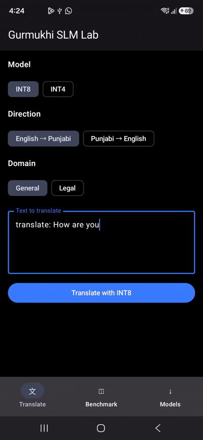

Gurmukhi Small Language Model

Gurmukhi SLM explores bidirectional translation between English and Punjabi written in the Gurmukhi script. The project builds its corpus and tokenizer from scratch, compares sequence-to-sequence and decoder-only Transformer architectures, and improves the decoder-only model through teacher distillation.

Project Pipeline
- Combine three English-Punjabi parallel corpora into one consistent schema.
- Audit and clean the combined corpus.
- Train a shared 24,000-token bilingual BPE tokenizer.
- Train a sequence-to-sequence Transformer baseline.
- Train a modern decoder-only Transformer.
- Distil translation behavior from a stronger teacher into the decoder-only student.
- Evaluate the baseline, teacher, and distilled student with automated metrics and manual review.
Dataset
The combined corpus contains three sources:
| Source | Domain | Rows |
|---|---|---|
judicial |
Legal | 1,261,948 |
pan_Guru |
General | 85,907 |
trainclean |
General | 255,705 |
| Total | 1,603,560 |
The legal-domain data comes from the Anuvaad Parallel Corpus. For every aligned sentence pair, the preparation script records its source, domain, language tags, text lengths, and a stable pair hash.
Combined Corpus Summary
- Exact duplicate pairs before cleaning: 2,513
- Average English length: 24.26 words
- Average Punjabi length: 25.97 words
- General-domain rows: 341,612
- Legal-domain rows: 1,261,948
Cleaning
The pipeline maps all three datasets to a shared English-to-Punjabi schema, then applies the following checks:
- Normalize text to Unicode NFC and collapse repeated whitespace.
- Remove exact duplicate English-Punjabi pairs using the pair hash.
- Reject punctuation-only and URL-only records.
- Filter extreme sentence lengths and strongly mismatched source/target length ratios.
- Flag very short records and rows containing URLs for review.
- Remove remaining URL and common web-page noise from the training split.
- Retain source and domain labels so performance can be analysed by corpus and domain.
Corpus construction is implemented in prepare_parallel_corpus.py. The cleaning audit and visual analysis are in EDA.py.
Tokenization
tokenization.py trains a shared bilingual byte-pair encoding tokenizer with:
- A 24,000-token vocabulary
- Unicode NFC normalization
- Metaspace whitespace handling
- Translation direction and control tokens
- One vocabulary for English and Gurmukhi text
A shared tokenizer lets both translation directions use the same vocabulary and supports future student-to-student distillation experiments.
Models
Sequence-to-Sequence Transformer
Gur_slm_seq2seq.py implements the encoder-decoder Transformer baseline. The encoder reads the source sentence, and the autoregressive decoder generates the translation.
Decoder-Only Transformer
gur_slm_decoder.py contains the main decoder-only training workflow. The prompt specifies the translation direction, allowing one causal model to translate both English to Punjabi and Punjabi to English.
The base decoder uses RMSNorm, rotary position embeddings, SwiGLU feed-forward layers, tied token embeddings, mixed-precision training, gradient clipping, and checkpoint resume support. The current base checkpoint has approximately 58.1 million parameters and is published as Ajaple/gur-slm-decoder-base.
Teacher Distillation
distillation.py implements the teacher-refinement stage. Sarvam-Translate serves as the English-to-Punjabi teacher because it supports Punjabi and outperformed the initial student during the project’s qualification checks.
Because the teacher and student use different tokenizers, the main training path uses quality-gated sequence-level knowledge distillation instead of exact token-level KL divergence:
- Generate Punjabi translations with the teacher.
- Reject outputs with script errors, English leakage, implausible length ratios, or other quality failures.
- Mix accepted teacher targets with gold parallel-corpus targets.
- Fine-tune the decoder-only student with cross-entropy.
- Compare the original student, teacher, and distilled checkpoint.
The workflow also includes an on-policy reverse-KL experiment inspired by MiniLLM: Knowledge Distillation of Large Language Models. Because the vocabularies differ, the result is treated as a sequence-level diagnostic, not exact token-level reverse KL.
Evaluation
Evaluation combines corpus metrics with targeted failure checks:
- BLEU and chrF through SacreBLEU
- Gurmukhi script error rate
- English leakage rate
- Instruction leakage rate
- Side-by-side translation inspection
- A manually reviewed challenge set
- FLORES+ English (
eng_Latn) to Punjabi (pan_Guru) evaluation
FLORES+ is reserved for evaluation. Full dev and devtest runs are still needed before drawing broad conclusions from the current small-cache distillation experiment.
The original online data-analysis notebook is available on marimo molab.
Future Work
- Run full FLORES+
devanddevtestevaluations for the base and distilled models. - Quantize the refined model to 8-bit and 4-bit and measure quality, memory use, and latency.
- Investigate quantization-aware 1.58-bit and 1-bit model variants rather than treating them as simple post-training conversions.
- Export the best practical checkpoint to a mobile-compatible runtime.
- Test translation quality, peak memory, startup time, and tokens per second on real mobile hardware.
Data License

The corpus work is licensed under a Creative Commons Attribution 4.0 International License. Individual source datasets and teacher checkpoints retain their own licenses and terms; review them before redistributing derived artifacts.